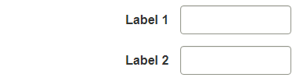
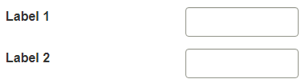

Proximité visuelle des étiquettes
Positioning labels
Make your forms more understandable by positioning labels for form fields where the user expects them visually: either above the field or to the left, right-aligned. Labels for radio buttons and checkboxes are positioned after the field.
Good Example: Label above the field
This layout is preferred by the WET Style Guide - Form Labels. Users can process the information in half the time of left-aligned labels. The labels are positioned above the form fields and left-aligned.

Good Example: Label to the left, right-aligned
This layout is preferred by the WET Style Guide when there’s a need to conserve vertical space. The labels are positioned to the left of the form fields and right-aligned.
Bad Example: Label to the left, left-aligned
This layout positions the labels far away from the controls. Screen magnification users may have trouble fitting both on the screen, forcing horizontal scrolling.
